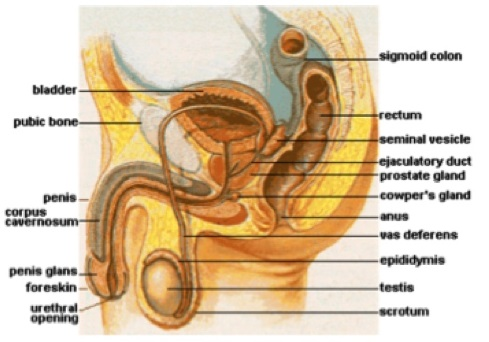

Male Anatomy

- The penis consists of several parts:
- The glans is the head of the penis, containing approximately 4,000-5,000 nerve endings. In uncircumcised men, it is covered by the prepuce or foreskin, which protects and lubricates the glans.
- The shaft is made up of three columns of erectile tissue: one corpus spongiosum and two corpora cavernosa. When the man is sexually aroused, these fill with blood and cause the penis to become erect.
- The scrotum is the sac which holds the testes. Males can draw the testes toward the body or drop them lower to help regulate their temperature to 94 degrees Fahrenheit for sperm production.
- The perineum is the region between the scrotum and the anus. Many people find this area sexually arousing when stimulated.
- The anus is the opening of the rectum. It is controlled by two sphincter muscles, one voluntary, one involuntary.